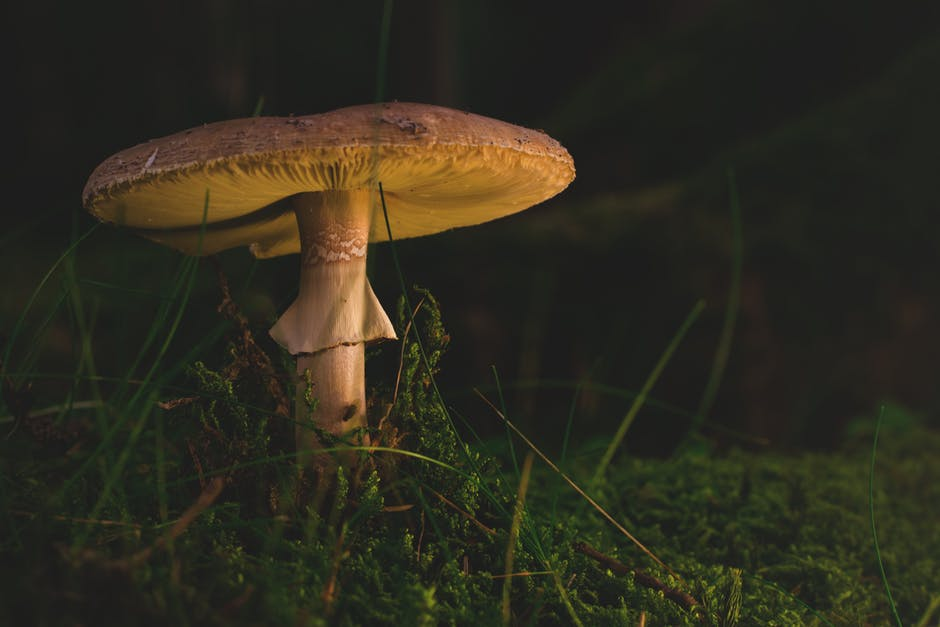

When the veil breaks
(revealing the gills)
it will leave either a ring/sack around the base of the mushroom, or it will leave a ring higher up on the stalk?

Ring/Sack at Base
Ring on Stalk
Back
Homepage